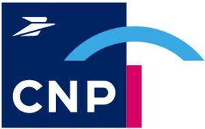

Trade Mark Journal No.2025/038 19 September 2025
WO0000001865283 (9,16,35,36,37,38,39,41,42,43,44,45)
Office of origin: France
Date of International Registration:12 November 2024
Date of designation in the UK:
12 November 2024

The mark contains the colours navy blue: Pantone 2757 C, pink: Pantone Rubine Red C and sky blue: Pantone 292 C
International priority date claimed: 9 September 2024
(France)
(5080876)
- Class 9
- Software (recorded programs); software (recorded programs) in the field of insurance, pension planning, savings, retirement, health; authentication software; software intended for data communications; interfaces [for computers]; downloadable computer programs and applications for mobile media, telephones and tablets; mobile applications enabling subscription of insurance and pension planning contracts; mobile applications enabling subscribers and beneficiaries of insurance or pension planning contracts to access their customer area and consult their rights, accounts and balances; mobile applications enabling subscribers and beneficiaries of insurance or pension planning contracts to submit claims for compensation; mobile applications enabling recipients of retirement plans to access their client space and consult their rights, accounts and balances; mobile applications providing access to support and assistance services with respect to insurance and pension planning; computer application software for mobile phones, namely, software enabling users to find, research, analyze, compare and reserve promotions and special offers in connection with insurance and pension planning; software for storing, posting and displaying information in texts, announcements, messages, files, photographs and, more generally, digital content via computer, mobile, wireless and telecommunication networks; database management software with respect to insurance and pension planning services; computer interface enabling the visualization of insurance and pension planning offers; computer platform in the form of software enabling insurance companies and/or insurance brokers to offer insurance and provident fund services; computer platform in the form of software enabling users to obtain information and advice with respect to insurance and pension plans and to take out insurance and pension contracts; software applications connecting individuals and insurance companies or insurance brokers; software for on-line business transactions; data processing equipment; computers; tablet computers; smartphones; computer peripherals; detectors; integrated circuit cards [smart cards].
- Class 16
- Printed matter, particularly on the subject of insurance and pension planning; books; newspapers; prospectuses; magazines; journals; newsletters; printed news releases; posters; albums; handouts; cards; bookbinding material; photographs; stationery.
- Class 35
- The bringing together, for the benefit of third parties, of negotiation services for insurance and pension planning contracts for individuals, employees, retirees, companies and third-party resellers; computerized management of insurance and pension planning contracts; data processing services in the field of insurance and pension planning; systematization of information in computer databases; customer loyalty services for commercial, promotional, marketing or advertising purposes; organization, operation and supervision of customer loyalty programs; loyalty programs; loyalty program services tied to insurance and/or pension planning contracts; loyalty card services; loyalty services for employees, individuals and policyholders by means of provision of information, administrative support and administrative assistance services in the field of insurance and pension planning; advertising; advertising in the field of insurance; commercial business management; commercial administration; commercial business management for brokers and insurance agencies on a subcontracting basis; office functions; dissemination of advertising material (leaflets, prospectuses, printed matter, samples); newspaper subscription services (for third parties); arranging subscriptions to telecommunication services for third parties; business management and organization consultancy; accounting; document reproduction; employment agency services; computerized file management services; website traffic optimization; organization of exhibitions for commercial or advertising purposes; online advertising on a computer network; rental of advertising time on all communication media; publication of advertising texts; rental of advertising space; dissemination of advertisements; consulting in connection with communication (advertising); public relations; consulting in connection with communication (public relations); company audits (commercial analyses); commercial intermediation services; sponsorship search; commercial intermediary services in the framework of bringing prospective private investors in contact with entrepreneurs looking for financing; professional networking services; business networking services; appointment scheduling services [office work] with repairmen, mechanics and dealers for vehicle maintenance and repair of broken-down vehicles; appointment scheduling services [office work] with craftsmen, cleaning companies, locksmiths.
- Class 36
- Insurance services; insurance services including online; insurance services provided in combination with banking services; offer and subscription of supplements and options for insurance and pension planning contracts; individual and group insurance contracts; insurance contracts linked to banking services and/or bank contracts; underwriting of insurance contracts; insurance brokerage; information and assistance with respect to insurance and insurance contracts; life insurance; death insurance; funeral insurances; pension insurance; pension insurance underwriting; nursing care insurance; disability Insurance; borrower insurance; operating losses insurance; unpaid rent insurance; motor vehicle insurance underwriting; home insurance; personal property insurance; civil liability insurance; legal protection insurance; travel cancellation insurance; animal insurance; transport insurance; repatriation insurance; health insurance; dental insurance; school insurance; professional risk insurance; property damage insurance; complementary health insurance services (mutual health insurance fund); fire, accident and miscellaneous risk insurance, also known as property and casualty insurance; digital risk insurance; rent guarantee services; rent surety services; unpaid rent guarantee services; rent payment services on behalf of third parties; provident fund services; retirement payment services; helping companies manage their pension funds; retirement savings plan services; financial sponsorship of companies and events; collection and raising of funds; charitable fundraising services; assistance in financing of companies and structures in the innovation, digital and collaborative economy, social and solidarity economy sectors; participatory financing services; financing services; collection and distribution of donations, grants to foundations, research institutes, health institutions and other establishments involved in or dedicated to training and education, social and humanitarian action, modernization of the hospital sector and social and managerial innovation in the hospital sector, prevention and promotion of well-being and health, environmental protection; financial analysis; raising capital; capital investment; banking services; online banking services; issuance of credit cards; issuing of gift certificates which may then be redeemed for goods or services; issuing of credit coupons in the context of customer loyalty programs; electronic wallet services; electronic payment processing services; services for authorizing and settling financial transactions; payment verification services; electronic payment services; financial affairs; monetary affairs; financial management; financial consultation; financial evaluation (insurance, banking, real estate); fund investment; loans (financing); financial services; fund raising; advice regarding wealth management; real estate affairs; real estate appraisals; real property management; rental of offices; lease purchase of commercial real estate; rental of buildings; management of buildings; lease purchase of office space; rental of office space; incubator services, namely, rental of office space to the self-employed, start-up companies, going concern businesses and non-profit associations; incubator services, namely, providing work space equipped with office equipment and other facilities for emerging, start-up or going concern companies.
- Class 37
- Assistance to motorists and travelers in the event of trips and travel, namely vehicle breakdown assistance (repair); provision of information with respect to vehicle maintenance and repair of broken-down vehicles by means of breakdown services, garages and car dealerships; servicing and repairing vehicles, movable property and real estate, including prevention or follow-up of claims; advice and information on building, renovating and equipping homes to make them more accessible and independent for people who are becoming dependent; servicing and repairing machines, especially stairlifts for the elderly and/or dependent; installing, servicing and repairing computer hardware, especially for policyholders and elderly and/or dependent persons; construction; cleaning of buildings (interior); cleaning of buildings (exterior surface); window cleaning; vehicle cleaning; vehicle maintenance; disinfection; rat exterminating; provision of information and advice with respect to maintenance, installation, repair services by craftsmen, cleaning companies, locksmiths.
- Class 38
- Providing access to a database, a website and/or an online platform enabling users to obtain information with respect to insurance (life and non-life) and pension planning, and to subscribe to insurance contracts with insurance companies and/or insurance brokers; providing access to websites and/or applications downloadable via telecommunication networks for the purpose of proposing and/or promoting insurance and pension planning services, and providing access to online documentation services in these fields; providing access to a database for insurance mediation purposes; telecommunications; information with respect to telecommunications; communications by computer terminals; communications by fiber-optic networks; radio communications; telephone communications; cellular telephone communication; providing user access to global computer networks; provision of forums online; provision of chat lines on the Internet; Internet chat room services; providing access to databases; electronic bulletin board services (telecommunication services); teleconferencing services; videoconferencing services; electronic messaging services; rental of access time to global computer networks.
- Class 39
- Transport by taxi, ambulance or other medical vehicle for patients and their relatives following a medical operation; repatriation and transport of travelers in case of accident or illness; escorting of patients and their relatives during transport; home delivery of medicine; organization of travel for patients and their relatives; information with respect to transport; logistics services with respect to transport; assistance for motorists and travelers in the event of trips and travel, namely assistance in the event of vehicle breakdown (towing); vehicle towing; recovery and repatriation of vehicles; dispatch of spare parts; rental and lending of vehicles.
- Class 41
- Publication (including electronic) of articles, newspapers, magazines, books, journals, newsletters in the field of insurance, pension planning, savings, retirement, health; organization and conducting of colloquiums; organization and conducting of conferences; organization and conducting of congresses; schools (education) and institutes (education) for training in the field of insurance and pension planning; training; think tank services with respect to support of start-up companies, insurance and economic and social innovation; entertainment; provision of non-downloadable films via video-on-demand services; motion picture production; organization of competitions (education or entertainment); organization of exhibitions for cultural or educational purposes.
- Class 42
- Development, rental, installation, maintenance, updating of software in the field of insurance and pension planning; programming for computers; computer system analysis; computer system design; research and development of new products for third parties; digitization of documents; Software as a Service (SaaS); cloud computing; advice regarding information technology; server hosting; electronic data storage.
- Class 43
- Assistance, advice and information for reservation and placement in retirement homes for the elderly; reservation of places in retirement homes; organizing and providing childcare services; day-care centers; reservation and rental of facilities and rooms for conferences, exhibitions, meetings, professional and social events; rental of rooms for seminars, conferences and exhibitions; providing community centers for holding gatherings and meetings of a professional, commercial or social nature; temporary accommodation reservation; retirement home services.
- Class 44
- Medical assistance; medical assistance at home; emergency medical assistance; home medical assistance or nursing services; post-operative home nursing aid services; respite care services by means of home nursing aids; medical services; organization and provision of medical care services at home for individuals; provision of medical facilities; hospital services; nursing homes; convalescent home services; rest home services; reservation of places in hospitals, rest or convalescent homes; dental assistance; dental services; veterinary services; skin care services (beauty and sanitary care); plastic surgery; opticians' services; alternative medicine services; beauty salon services; hairdressing salon services; pet grooming.
- Class 45
- Provision of non-medical daily living support services for individuals; babysitting; escorting children to nursery school or to school; guarding of premises; pet care services; provision of household help; legal assistance in the context of insurance contracts; legal assistance relating to credit transactions; help with administrative procedures following a death; legal services; funerary services; cremation services; support for bereaved persons (funeral services).
CNP ASSURANCES
Representative: Keltie LLP, No.1 London Bridge London SE1 9BA UNITED KINGDOM